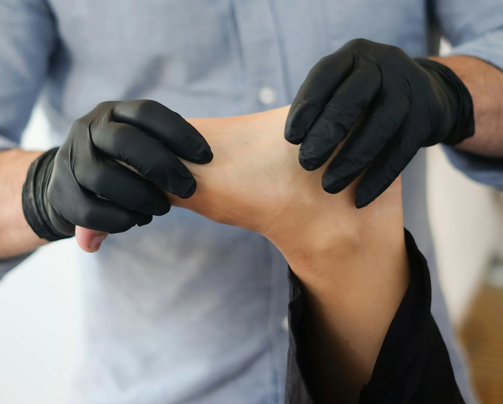
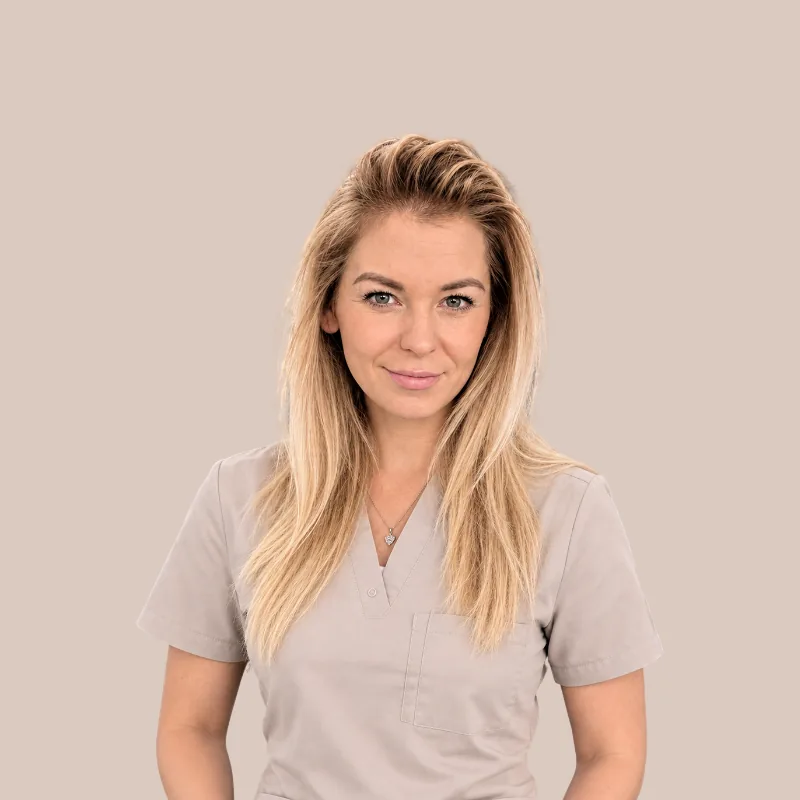

Paznokcie zmienione chorobowo
Najpierw ocena zmian, na przykład grzybicy. Potem oczyszczenie płytki, preparaty dobrane do problemu i plan pielęgnacji w domu.
20-40 minod 130 zł

ul. Świętych Cyryla i Metodego 26B, Bytom
Paznokcie wrastające i zmienione chorobowo, odciski, modzele, pękające pięty i brodawki. Przyjmuje Beata Nykiel-Drzewiecka, także najmłodszych pacjentów.
Każda wizyta zaczyna się od obejrzenia stóp i rozmowy. Jeśli nie wiesz, który zabieg wybrać, zacznij od konsultacji - jej koszt odliczam od ceny zabiegu wykonanego podczas tej samej wizyty.
Najpierw ocena zmian, na przykład grzybicy. Potem oczyszczenie płytki, preparaty dobrane do problemu i plan pielęgnacji w domu.
Usunięcie drażniącego fragmentu paznokcia, opracowanie wału paznokciowego i specjalistyczny opatrunek. Na wkręcające się paznokcie zakładam klamrę ortonyksyjną.
Ocena zmiany, opracowanie i preparat dobrany do jej rodzaju i miejsca. Na pierwszej wizycie dostajesz preparaty i zalecenia do domu.
Usunięcie zrogowaceń i odciążenie miejsc, które najbardziej cierpią od nacisku i tarcia, dobrane do miejsca i rodzaju zmiany.
Opracowanie twardej, pękającej skóry pięt i podeszwy, zakończone opatrunkiem, który chroni opracowaną skórę.
Podstawowy, profilaktyczny, gdy paznokcie i skóra są zdrowe, albo rozszerzony, gdy pojawiają się zgrubiałe paznokcie, modzele i odciski.
Przy zapisie na niewłaściwą usługę cena i czas zabiegu mogą się zmienić na miejscu w gabinecie.

Od 10 lat zajmuję się podologią. Najczęściej pracuję z paznokciami zmienionymi chorobowo i z brodawkami, chętnie przyjmuję też dzieci. W gabinecie zajmuję się pełną pielęgnacją i terapią stóp.
Podologia to dla mnie nie tylko zabieg, ale też profilaktyka, edukacja i dobre nawyki. Zawsze pokazuję, jak dbać o stopy na co dzień.
Stawiam na indywidualne podejście i bezpieczeństwo, ciągle się uczę i szukam nowych rozwiązań. Prywatnie kocham góry, rower i aktywny czas z rodziną.
Beata Nykiel-Drzewieckapodolog, Bytom
Prawdziwe efekty zabiegów wykonanych w gabinecie. Przesuń, aby zobaczyć kolejne, kliknij, aby powiększyć.
ul. Świętych Cyryla i Metodego 26B
41-909 Bytom
| Poniedziałek | 10:00-20:00 |
| Wtorek | 8:00-16:00 |
| Środa | 8:00-16:00 |
| Czwartek | 10:00-20:00 |
| Piątek | 8:00-18:00 |
| Sobota i niedziela | nieczynne |
ul. Świętych Cyryla i Metodego 26B, Bytom
Mapa Google wczyta się po przewinięciu.